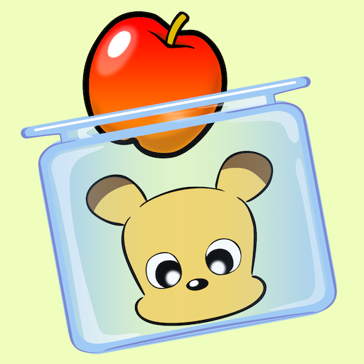

Contents
Topics

3D Movies
iPhone Game Appli iPhoneゲーム開発アプリ
-
uPanda Breaks Out Fruits
- 無料：カテゴリ: ゲーム： 4+ 評価
- バージョン: 4.12
- リリース： 2014年9月15日
- 更新： 2022年4月20日
- サイズ : 10.7 MB
- 互換性： iOS 14.4 以降のiPhone、iPod touch に対応。および、macOS 11.0以降とApple M1 チップを搭載したMac に対応。
-

Balloons Occupy
- 無料：カテゴリ: ゲーム： 4+ 評価
- バージョン: 3.0
- リリース： 2015年1月29日
- 更新： 2020年9月1日
- サイズ : 13 MB
- 互換性： iOS 8.0 以降のiPhone、iPod touch に対応。および、macOS 11.0以降とApple M1 チップを搭載したMac に対応。
-
Going USAINU（邦題： うさ犬が行く）
- 無料：カテゴリ: ゲーム： 4+ 評価
- バージョン: 3.21
- リリース： 2015年9月14日
- 更新： 2022年3月7日
- サイズ : 19.7 MB
- 互換性： iOS 14.4 以降のiPhone、iPod touch に対応。および、macOS 11.0以降とApple M1 チップを搭載したMac に対応。
-
Fine Kingdom（邦題： 楽小王国）
- 無料：カテゴリ: ゲーム： 9+ 評価
- バージョン： 8.0
- リリース： 2017年2月7日
- 更新： 2020年4月9日
- サイズ： 9.3 MB
- 互換性： iOS 12.0 以降のiPhone、iPod touch に対応。および、macOS 11.0以降とApple M1 チップを搭載したMac に対応。
-

Get you'n PonG（邦題： ゲッチュンポン）
- 無料：カテゴリ: ゲーム： 4+ 評価
- バージョン： 1.0
- リリース： 2024年4月24日
- 更新： 2024年4月24日
- サイズ： 25.8 MB
- 互換性： iOS 17.2以降のiPhone、macOS 14.2以降とApple M1以降のチップを搭載したMac、visionOS 1.1以降のApple Visionに対応。
Hamamatsu Heritage 浜松郷土史
- 『変化抄』は「へんげしょう」か「へんかしょう」か （2023年3月5日）
- 安政地震に見られる一次史料としての『変化抄』 （2022年9月27日）
- 『変化抄』に通し番号を振る 2022年8月27日
- 浜松市博物館収蔵品紛失事件 2022年1月31日
- 浜松城天守閣を破却したのは誰か （2019年1月26日）
- 信玄街道 （2018年10月26日）
- 公開シンポジウム「静岡県と周辺地域の官衙出土文字資料と手工業」を聴いて （2018年6月20日）
- 高柳光壽に依る明智光秀研究基本書『明智光秀』書評 （2017年10月3日）
- 浜松の合祀された五社神社と諏訪神社 （2017年8月27日）
- 浜名湖南部陸地説と古代浜松地名比定地 （2017年8月6日）
- 浜松一中現北高校の毒大福餅事件の慰霊碑 （2017年5月31日）
- 遺跡に於ける大溝命名について （2017年5月20日）
- 杉浦国頭の書き残した浜松の二つのうとう坂 （2017年4月29日）
- 元禄天保郷帳敷智郡集計と大澤家領 （2017年2月11日）
- 木喰仏の木目 （2016年12月28日）
- 武田斥候笹田源吾と遠州大念仏 （2016年11月17日）
- 日の丸弁当少考 （2016年9月18日）
- 神原町の最後の猪堤 （2016年9月6日）
- 歴史に於ける公園の役割少考 （2016年7月31日）
- 内視鏡市場に圧倒的な強みを活かすオリンパスはソニーと提携 （2012年10月1日、2019年11月24日追記）
Scholarly Essays 論攷
- “あららげる”と“あらげる”の正当性 （2023年7月2日）
- 腰越状を読む （2018年7月4日）
- 陛下、殿下、閣下、猊下に関する敬称少考 （2017年11月28日）
- 動詞の接尾辞「し」に関する少考 （2016年6月8日）